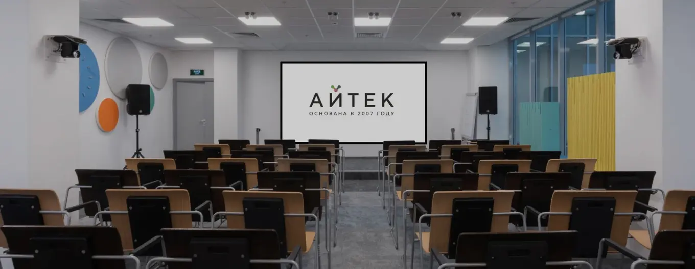

Федеральный исследовательский центр
Апатиты · 60 рабочих дней
Комплексное оснащение конференц-зала в городе Москва

Стоимость и срок указаны для этого объекта. Смета нового проекта зависит от помещения, комплектации и состава работ.
В рамках данного проекта необходимо разработать и реализовать решение по оснащению комплексом мультимедийного оборудования в конференц-зале. Основной целью создания данного комплекса является возможность проведения совещаний и закрытых конференций в интерактивном формате с участием первых лиц учреждения.
Специалистами ГК Айтек был успешно завершён проект по комплексному оснащению объекта современным мультимедийным оборудованием под ключ. В ходе реализации проекта был произведён весь спектр работ — от поставки оборудования и разработки проектной документации до финальной отладки систем. Состав реализованного комплекса: Проекционный экран 1,3 х 2,3м и ультракороткофокусный проектор с мощностью светового потока 5000 люмен Звуковые мобильный системы Камеры захвата с умным наведением на активного спикера Скрытая многоуровневая коммутация Централизованное управление всем оборудованием с единого пульта
Компания Айтек приняла участие в реализации проекта по комплексному мультимедийному оснащению многофункционального зала в компании IBS. Силами компании были выполнены все необходимые работы по проектированию, поставке и монтажу оборудования. Срок реализации проекта составил - 1 месяц.
Руководством компании IBS была поставлена нетривиальная задача – реализовать многофункциональный зал на стационарном оборудовании, но с возможностью трансформации его под различные форматы мероприятий:
Проведение презентаций и лекций;
Публичное выступление руководства компании;
Проведение видеоконференций;
Выступление музыкальных коллективов;
Запись и трансляция в сеть проводимых мероприятий.
Сложность задачи заключалась ещё и в том, что фиксированных мест для выступающих и зрителей не предусматривалось: каждое мероприятие могло предполагало своё индивидуальное расположение публики. Но при этом должны сохраняться хороший обзор отображаемого изображения, качественный звук, покрытие зала объективами видеокамер.
В зале должна быть предусмотрена возможность подключения как дополнительных источников контента (ноутбуки гостей), так и дополнительных устройств видеоотображения (видеопанели на мобильных стойках). Эти подключения должны осуществляться через HDMI розетки, расположенные в колоннах зала.
Началом работы было создание рабочей документации, на основании которой для решения поставленных задач был реализован следующий комплекс мультимедийного оборудования: Система видеоотображения, состоящая из двух ультракороткофокусных проекторов, осуществляющих проекцию непосредственно на стену, покрытую специальной проекционной краской. Проекторы расположены на двух перпендикулярных друг другу стенах, что позволяет получить хорошую обзорность изображения изо всех мест зала. Проекторы имеют возможность показа как идентичного изображения, так и изображения с различных источников.
На колоннах размещаются 4-е PTZ-видеокамеры, управляемые при помощи операторского пульта с джойстиком.
Для независимого (матричного) вывода контента с различных источников на видеопроекторы и дополнительные видеопанели предусмотрен матричный коммутатор, работающий как сигналами стандарта HDMI, так и стандарта 3G-SDI (для видеокамер). Система коммутации предусматривает вывод изображения с любой из видеокамер на ПК для проведения видеоконференции или трансляции изображения в сеть.
Система озвучания представлена 4-мя активными громкоговорителями на мобильных стойках и 2-мя активными напольными мониторами, помогающими выступающему лучше слышать аудиторию или музыкальный аккомпанемент.
Для выступлений предусмотрены ручные радиомикрофоны и радиомикрофоны-гарнитуры.
Сведение и обработка звука со всех источников возложены на цифровой микшерный пульт.
Для удобства управления столь сложной мультимедийной системой предусмотрена интегрированная система управления, позволяющая оператору посредством интуитивно понятного пользовательского интерфейса, реализованного на настольной сенсорной панели, оперативно управлять всем комплексом оборудования. Также при помощи этой же сенсорной панели и настенных кнопочных панелей возможно управление освещением, моторизованными шторами и климатической установкой зала.
В бриф перейдут выбранный проект, тип помещения и бюджет примера. Все параметры можно изменить.